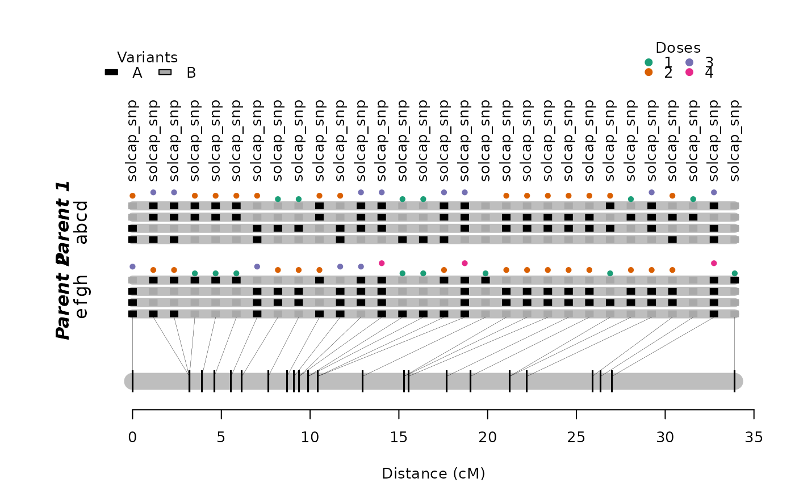

Estimates the linkage phase and recombination fraction between pre-built maps and creates a new map by merging them.
merge_maps(
map.list,
twopt,
thres.twopt = 10,
genoprob.list = NULL,
thres.hmm = "best",
tol = 1e-04
)a list of objects of class mappoly.map to be merged.
an object of class mappoly.twopt
containing the two-point information for all pairs of markers
present in the original maps
the threshold used to determine if the linkage phases compared via two-point analysis should be considered for the search space reduction (default = 3)
a list of objects of class mappoly.genoprob
containing the genotype probabilities for the maps to be merged.
If NULL (default), the probabilities are computed.
the threshold used to determine which linkage phase configurations should be returned when merging two maps. If "best" (default), returns only the best linkage phase configuration. NOTE: if merging multiple maps, it always uses the "best" linkage phase configuration at each block insertion.
the desired accuracy (default = 10e-04)
A list of class mappoly.map with two elements:
i) info: a list containing information about the map, regardless of the linkage phase configuration:
the ploidy level
number of markers
a vector containing the (ordered) indices of markers in the map, according to the input file
the names of markers in the map
a vector containing the dosage in parent 1 for all markers in the map
a vector containing the dosage in parent 2 for all markers in the map
a vector indicating the sequence (usually chromosome) each marker belongs
as informed in the input file. If not available,
chrom = NULL
physical position (usually in megabase) of the markers into the sequence
reference base used for each marker (i.e. A, T, C, G). If not available,
seq.ref = NULL
alternative base used for each marker (i.e. A, T, C, G). If not available,
seq.ref = NULL
a vector containing p-values of the chi-squared test of Mendelian segregation for all markers in the map
name of the dataset of class mappoly.data
the LOD threshold used to define the linkage phase configurations to test
ii) a list of maps with possible linkage phase configuration. Each map in the list is also a list containing
a vector containing the (ordered) indices of markers in the map, according to the input file
a vector of size (n.mrk - 1) containing a sequence of recombination
fraction between the adjacent markers in the map
linkage phase configuration for all markers in both parents
the hmm-based multipoint likelihood
merge_maps uses two-point information, under a given LOD threshold, to reduce the
linkage phase search space. The remaining linkage phases are tested using the genotype
probabilities.
# \donttest{
#### Tetraploid example #####
map1 <- get_submap(solcap.dose.map[[1]], 1:5)
#> Ploidy level: 4
#> Rec. Frac. Limit: 0.5
#> Number of markers: 5
#> Number of individuals: 160
#>
#> Init. values: 0.001 0.001 0.001 0.001
#> Iter: 1 0.016 0.001 0.001 0.005
#> Iter: 2 0.024 0.000 0.001 0.007
#> Iter: 3 0.028 0.000 0.000 0.008
#> Iter: 4 0.030 0.000 0.000 0.008
#> Iter: 5 0.030 0.000 0.000 0.008
#> Iter: 6 0.031 0.000 0.000 0.008
#> Iter: 7 0.031 0.000 0.000 0.008
#> Iter: 8 0.031 0.000 0.000 0.008
map2 <- get_submap(solcap.dose.map[[1]], 6:15)
#> Ploidy level: 4
#> Rec. Frac. Limit: 0.500
#> Number of markers: 10
#> Number of individuals: 160
#>
#> Init. values: 0.001 0.001 0.001 0.001 0.001 0.001 0.001 0.001 0.001
#> Iter: 1 0.007 0.004 0.012 0.008 0.004 0.003 0.001 0.003 0.001
#> Iter: 2 0.009 0.005 0.015 0.009 0.005 0.004 0.001 0.004 0.000
#> Iter: 3 0.010 0.005 0.016 0.010 0.004 0.004 0.000 0.005 0.000
#> Iter: 4 0.011 0.005 0.016 0.010 0.004 0.004 0.000 0.006 0.000
#> Iter: 5 0.011 0.005 0.016 0.010 0.004 0.004 0.000 0.006 0.000
#> Iter: 6 0.011 0.005 0.016 0.010 0.004 0.005 0.000 0.006 0.000
#> Iter: 7 0.011 0.005 0.016 0.010 0.004 0.005 0.000 0.006 0.000
map3 <- get_submap(solcap.dose.map[[1]], 16:30)
#> Ploidy level: 4
#> Rec. Frac. Limit: 0.500
#> Number of markers: 15
#> Number of individuals: 160
#>
#> Init. values: 0.001 0.001 0.001 0.001 0.001 0.001 0.001 0.001 0.001 0.001 0.001 0.001 0.001 0.001
#> Iter: 1 0.008 0.010 0.012 0.003 0.005 0.016 0.013 0.013 0.008 0.007 0.023 0.009 0.007 0.005
#> Iter: 2 0.010 0.013 0.017 0.001 0.004 0.021 0.015 0.019 0.008 0.007 0.031 0.013 0.009 0.007
#> Iter: 3 0.012 0.014 0.019 0.000 0.003 0.022 0.015 0.021 0.008 0.007 0.034 0.015 0.010 0.008
#> Iter: 4 0.012 0.015 0.020 0.000 0.003 0.022 0.014 0.023 0.007 0.007 0.034 0.017 0.010 0.010
#> Iter: 5 0.013 0.015 0.020 0.000 0.003 0.022 0.014 0.024 0.007 0.007 0.034 0.018 0.011 0.011
#> Iter: 6 0.013 0.014 0.020 0.000 0.003 0.022 0.014 0.024 0.006 0.007 0.034 0.018 0.011 0.012
#> Iter: 7 0.013 0.014 0.020 0.000 0.003 0.022 0.014 0.024 0.006 0.007 0.034 0.019 0.011 0.013
#> Iter: 8 0.014 0.014 0.020 0.000 0.003 0.022 0.014 0.025 0.006 0.007 0.034 0.019 0.011 0.014
#> Iter: 9 0.014 0.014 0.020 0.000 0.003 0.022 0.014 0.025 0.005 0.007 0.034 0.020 0.010 0.016
#> Iter: 10 0.014 0.014 0.020 0.000 0.003 0.022 0.014 0.025 0.005 0.007 0.033 0.020 0.010 0.017
#> Iter: 11 0.014 0.014 0.020 0.000 0.003 0.022 0.014 0.025 0.005 0.007 0.033 0.020 0.010 0.018
#> Iter: 12 0.015 0.013 0.020 0.000 0.003 0.022 0.014 0.025 0.005 0.007 0.033 0.020 0.010 0.020
#> Iter: 13 0.015 0.013 0.020 0.000 0.003 0.022 0.014 0.025 0.005 0.007 0.033 0.020 0.010 0.021
#> Iter: 14 0.015 0.013 0.020 0.000 0.003 0.022 0.014 0.025 0.005 0.007 0.033 0.020 0.009 0.022
#> Iter: 15 0.015 0.013 0.020 0.000 0.003 0.022 0.014 0.025 0.004 0.007 0.033 0.019 0.009 0.024
#> Iter: 16 0.016 0.013 0.020 0.000 0.003 0.022 0.014 0.025 0.004 0.007 0.033 0.019 0.009 0.025
#> Iter: 17 0.016 0.013 0.020 0.000 0.003 0.022 0.014 0.025 0.004 0.007 0.033 0.019 0.009 0.027
#> Iter: 18 0.016 0.012 0.020 0.000 0.003 0.022 0.014 0.025 0.004 0.007 0.033 0.018 0.009 0.028
#> Iter: 19 0.016 0.012 0.020 0.000 0.003 0.022 0.014 0.025 0.004 0.008 0.033 0.018 0.008 0.029
#> Iter: 20 0.016 0.012 0.020 0.000 0.003 0.022 0.014 0.025 0.004 0.008 0.033 0.018 0.008 0.031
#> Iter: 21 0.016 0.012 0.020 0.000 0.003 0.022 0.014 0.025 0.004 0.008 0.033 0.017 0.008 0.032
#> Iter: 22 0.017 0.012 0.020 0.000 0.003 0.022 0.014 0.025 0.004 0.008 0.033 0.017 0.008 0.034
#> Iter: 23 0.017 0.012 0.020 0.000 0.003 0.022 0.014 0.026 0.004 0.008 0.033 0.016 0.008 0.035
#> Iter: 24 0.017 0.012 0.020 0.000 0.003 0.022 0.014 0.026 0.004 0.008 0.033 0.016 0.008 0.036
#> Iter: 25 0.017 0.012 0.020 0.000 0.003 0.022 0.014 0.026 0.004 0.008 0.033 0.015 0.008 0.038
#> Iter: 26 0.017 0.012 0.020 0.000 0.003 0.022 0.014 0.026 0.003 0.008 0.033 0.015 0.008 0.039
#> Iter: 27 0.017 0.011 0.020 0.000 0.003 0.022 0.014 0.026 0.003 0.008 0.034 0.015 0.007 0.040
#> Iter: 28 0.017 0.011 0.020 0.000 0.003 0.022 0.014 0.026 0.003 0.008 0.034 0.014 0.007 0.041
#> Iter: 29 0.018 0.011 0.020 0.000 0.003 0.022 0.014 0.026 0.003 0.008 0.034 0.014 0.007 0.042
#> Iter: 30 0.018 0.011 0.020 0.000 0.003 0.022 0.014 0.026 0.003 0.008 0.034 0.013 0.007 0.044
#> Iter: 31 0.018 0.011 0.020 0.000 0.003 0.022 0.014 0.026 0.003 0.008 0.034 0.013 0.007 0.045
#> Iter: 32 0.018 0.011 0.020 0.000 0.003 0.022 0.014 0.026 0.003 0.008 0.034 0.013 0.007 0.046
#> Iter: 33 0.018 0.011 0.020 0.000 0.003 0.021 0.014 0.026 0.003 0.008 0.034 0.012 0.007 0.047
#> Iter: 34 0.018 0.011 0.020 0.000 0.003 0.021 0.014 0.026 0.003 0.008 0.034 0.012 0.007 0.048
#> Iter: 35 0.018 0.011 0.020 0.000 0.003 0.021 0.014 0.026 0.003 0.008 0.034 0.012 0.007 0.049
#> Iter: 36 0.018 0.011 0.020 0.000 0.003 0.021 0.014 0.026 0.003 0.008 0.034 0.011 0.007 0.049
#> Iter: 37 0.018 0.011 0.020 0.000 0.003 0.021 0.014 0.026 0.003 0.008 0.034 0.011 0.007 0.050
#> Iter: 38 0.018 0.011 0.020 0.000 0.003 0.021 0.014 0.026 0.003 0.008 0.034 0.011 0.007 0.051
#> Iter: 39 0.018 0.011 0.020 0.000 0.003 0.021 0.014 0.026 0.003 0.008 0.034 0.010 0.007 0.052
#> Iter: 40 0.019 0.011 0.020 0.000 0.003 0.021 0.014 0.026 0.003 0.008 0.034 0.010 0.007 0.052
#> Iter: 41 0.019 0.011 0.020 0.000 0.003 0.021 0.014 0.026 0.003 0.008 0.034 0.010 0.007 0.053
#> Iter: 42 0.019 0.010 0.020 0.000 0.003 0.021 0.014 0.026 0.003 0.008 0.034 0.010 0.007 0.054
#> Iter: 43 0.019 0.010 0.020 0.000 0.003 0.021 0.014 0.026 0.003 0.008 0.034 0.009 0.007 0.054
#> Iter: 44 0.019 0.010 0.020 0.000 0.003 0.021 0.014 0.026 0.003 0.008 0.034 0.009 0.007 0.055
#> Iter: 45 0.019 0.010 0.020 0.000 0.003 0.021 0.014 0.026 0.003 0.008 0.034 0.009 0.007 0.055
#> Iter: 46 0.019 0.010 0.020 0.000 0.003 0.021 0.014 0.026 0.003 0.008 0.034 0.009 0.007 0.056
#> Iter: 47 0.019 0.010 0.020 0.000 0.003 0.021 0.014 0.026 0.002 0.008 0.034 0.009 0.007 0.056
#> Iter: 48 0.019 0.010 0.020 0.000 0.003 0.021 0.014 0.026 0.002 0.008 0.035 0.008 0.006 0.057
#> Iter: 49 0.019 0.010 0.020 0.000 0.003 0.021 0.014 0.026 0.002 0.008 0.035 0.008 0.006 0.057
#> Iter: 50 0.019 0.010 0.020 0.000 0.003 0.021 0.014 0.026 0.002 0.008 0.035 0.008 0.006 0.057
#> Iter: 51 0.019 0.010 0.020 0.000 0.003 0.021 0.014 0.026 0.002 0.008 0.035 0.008 0.006 0.058
#> Iter: 52 0.019 0.010 0.020 0.000 0.003 0.021 0.014 0.026 0.002 0.008 0.035 0.008 0.006 0.058
#> Iter: 53 0.019 0.010 0.020 0.000 0.003 0.021 0.014 0.026 0.002 0.008 0.035 0.008 0.006 0.058
#> Iter: 54 0.019 0.010 0.020 0.000 0.003 0.021 0.014 0.026 0.002 0.008 0.035 0.007 0.006 0.059
#> Iter: 55 0.019 0.010 0.020 0.000 0.003 0.021 0.014 0.026 0.002 0.008 0.035 0.007 0.006 0.059
#> Iter: 56 0.019 0.010 0.020 0.000 0.003 0.021 0.014 0.026 0.002 0.008 0.035 0.007 0.006 0.059
#> Iter: 57 0.019 0.010 0.020 0.000 0.003 0.021 0.014 0.026 0.002 0.008 0.035 0.007 0.006 0.059
#> Iter: 58 0.019 0.010 0.020 0.000 0.003 0.021 0.014 0.026 0.002 0.008 0.035 0.007 0.006 0.060
#> Iter: 59 0.019 0.010 0.020 0.000 0.003 0.021 0.014 0.026 0.002 0.008 0.035 0.007 0.006 0.060
#> Iter: 60 0.019 0.010 0.020 0.000 0.003 0.021 0.014 0.026 0.002 0.008 0.035 0.007 0.006 0.060
#> Iter: 61 0.019 0.010 0.020 0.000 0.003 0.021 0.014 0.026 0.002 0.008 0.035 0.007 0.006 0.060
#> Iter: 62 0.019 0.010 0.020 0.000 0.003 0.021 0.014 0.026 0.002 0.008 0.035 0.006 0.006 0.060
#> Iter: 63 0.019 0.010 0.020 0.000 0.003 0.021 0.014 0.026 0.002 0.008 0.035 0.006 0.006 0.061
#> Iter: 64 0.019 0.010 0.020 0.000 0.003 0.021 0.014 0.026 0.002 0.008 0.035 0.006 0.006 0.061
full.map <- get_submap(solcap.dose.map[[1]], 1:30)
#> Ploidy level: 4
#> Rec. Frac. Limit: 0.500
#> Number of markers: 30
#> Number of individuals: 160
#>
#> Init. values: 0.001 0.001 0.001 0.001 0.001 0.001 0.001 0.001 0.001 0.001 0.001 0.001 0.001 0.001 0.001 0.001 0.001 0.001 0.001 0.001 0.001 0.001 0.001 0.001 0.001 0.001 0.001 0.001 0.001
#> Iter: 1 0.016 0.001 0.002 0.006 0.006 0.007 0.006 0.011 0.008 0.004 0.003 0.001 0.004 0.001 0.003 0.009 0.012 0.014 0.003 0.006 0.017 0.013 0.013 0.007 0.007 0.023 0.009 0.007 0.005
#> Iter: 2 0.024 0.000 0.001 0.007 0.007 0.009 0.006 0.014 0.010 0.004 0.003 0.001 0.004 0.001 0.004 0.009 0.016 0.019 0.001 0.004 0.021 0.014 0.017 0.006 0.008 0.032 0.012 0.009 0.007
#> Iter: 3 0.028 0.000 0.000 0.007 0.007 0.009 0.006 0.015 0.010 0.004 0.003 0.000 0.005 0.001 0.004 0.008 0.017 0.022 0.000 0.003 0.022 0.014 0.019 0.006 0.008 0.035 0.014 0.010 0.009
#> Iter: 4 0.029 0.000 0.000 0.007 0.007 0.009 0.006 0.015 0.010 0.004 0.003 0.000 0.005 0.000 0.004 0.007 0.018 0.023 0.000 0.003 0.022 0.014 0.020 0.005 0.008 0.035 0.015 0.011 0.010
#> Iter: 5 0.030 0.000 0.000 0.007 0.007 0.009 0.006 0.015 0.010 0.004 0.003 0.000 0.005 0.000 0.004 0.006 0.018 0.024 0.000 0.003 0.022 0.014 0.020 0.004 0.008 0.035 0.016 0.011 0.011
#> Iter: 6 0.031 0.000 0.000 0.007 0.007 0.009 0.006 0.015 0.010 0.004 0.003 0.000 0.005 0.000 0.004 0.005 0.018 0.025 0.000 0.003 0.022 0.014 0.020 0.004 0.008 0.035 0.017 0.011 0.013
#> Iter: 7 0.031 0.000 0.000 0.007 0.007 0.009 0.006 0.015 0.010 0.004 0.003 0.000 0.005 0.000 0.004 0.005 0.018 0.025 0.000 0.003 0.022 0.014 0.020 0.004 0.008 0.035 0.017 0.011 0.014
#> Iter: 8 0.031 0.000 0.000 0.007 0.007 0.009 0.006 0.015 0.010 0.004 0.003 0.000 0.005 0.000 0.005 0.004 0.019 0.026 0.000 0.003 0.022 0.014 0.021 0.003 0.008 0.034 0.018 0.011 0.015
#> Iter: 9 0.031 0.000 0.000 0.007 0.007 0.009 0.006 0.015 0.010 0.004 0.003 0.000 0.005 0.000 0.005 0.004 0.019 0.026 0.000 0.003 0.022 0.014 0.021 0.003 0.008 0.034 0.018 0.011 0.017
#> Iter: 10 0.031 0.000 0.000 0.007 0.007 0.009 0.006 0.015 0.010 0.004 0.003 0.000 0.005 0.000 0.005 0.003 0.019 0.026 0.000 0.003 0.022 0.014 0.021 0.003 0.008 0.034 0.018 0.011 0.018
#> Iter: 11 0.031 0.000 0.000 0.007 0.007 0.009 0.006 0.015 0.010 0.004 0.003 0.000 0.005 0.000 0.005 0.003 0.019 0.026 0.000 0.003 0.022 0.014 0.021 0.003 0.009 0.034 0.018 0.010 0.020
#> Iter: 12 0.031 0.000 0.000 0.007 0.007 0.009 0.006 0.015 0.010 0.004 0.003 0.000 0.005 0.000 0.005 0.003 0.020 0.026 0.000 0.003 0.021 0.014 0.021 0.002 0.009 0.034 0.018 0.010 0.021
#> Iter: 13 0.031 0.000 0.000 0.007 0.007 0.009 0.006 0.015 0.010 0.004 0.003 0.000 0.005 0.000 0.005 0.003 0.020 0.026 0.000 0.003 0.021 0.014 0.021 0.002 0.009 0.034 0.018 0.010 0.023
#> Iter: 14 0.031 0.000 0.000 0.007 0.007 0.009 0.006 0.015 0.010 0.004 0.003 0.000 0.005 0.000 0.005 0.002 0.020 0.026 0.000 0.003 0.021 0.014 0.021 0.002 0.009 0.034 0.017 0.010 0.024
#> Iter: 15 0.031 0.000 0.000 0.007 0.007 0.009 0.006 0.015 0.010 0.004 0.003 0.000 0.005 0.000 0.005 0.002 0.020 0.026 0.000 0.003 0.021 0.013 0.021 0.002 0.009 0.034 0.017 0.009 0.026
#> Iter: 16 0.031 0.000 0.000 0.007 0.007 0.009 0.006 0.015 0.010 0.004 0.003 0.000 0.005 0.000 0.005 0.002 0.021 0.026 0.000 0.003 0.021 0.013 0.021 0.002 0.009 0.034 0.017 0.009 0.028
#> Iter: 17 0.031 0.000 0.000 0.007 0.007 0.009 0.006 0.015 0.010 0.004 0.003 0.000 0.005 0.000 0.005 0.002 0.021 0.026 0.000 0.003 0.021 0.013 0.021 0.002 0.009 0.034 0.016 0.009 0.029
#> Iter: 18 0.031 0.000 0.000 0.007 0.007 0.009 0.006 0.015 0.010 0.004 0.003 0.000 0.005 0.000 0.005 0.002 0.021 0.025 0.000 0.003 0.021 0.013 0.021 0.002 0.009 0.034 0.016 0.009 0.031
#> Iter: 19 0.031 0.000 0.000 0.007 0.007 0.009 0.006 0.015 0.010 0.004 0.003 0.000 0.005 0.000 0.005 0.001 0.021 0.025 0.000 0.003 0.021 0.013 0.021 0.001 0.009 0.034 0.016 0.009 0.033
#> Iter: 20 0.031 0.000 0.000 0.007 0.007 0.009 0.006 0.015 0.010 0.004 0.003 0.000 0.005 0.000 0.005 0.001 0.022 0.025 0.000 0.003 0.021 0.013 0.021 0.001 0.009 0.034 0.015 0.008 0.034
#> Iter: 21 0.031 0.000 0.000 0.007 0.007 0.009 0.006 0.015 0.010 0.004 0.003 0.000 0.005 0.000 0.005 0.001 0.022 0.025 0.000 0.003 0.021 0.013 0.021 0.001 0.009 0.034 0.015 0.008 0.036
#> Iter: 22 0.031 0.000 0.000 0.007 0.007 0.009 0.006 0.015 0.010 0.004 0.003 0.000 0.005 0.000 0.005 0.001 0.022 0.025 0.000 0.003 0.021 0.013 0.021 0.001 0.009 0.034 0.014 0.008 0.037
#> Iter: 23 0.031 0.000 0.000 0.007 0.007 0.009 0.006 0.015 0.010 0.004 0.003 0.000 0.005 0.000 0.005 0.001 0.022 0.025 0.000 0.003 0.021 0.013 0.021 0.001 0.009 0.034 0.014 0.008 0.039
#> Iter: 24 0.031 0.000 0.000 0.007 0.007 0.009 0.006 0.015 0.010 0.004 0.003 0.000 0.005 0.000 0.005 0.001 0.022 0.025 0.000 0.003 0.021 0.013 0.021 0.001 0.009 0.034 0.013 0.008 0.040
#> Iter: 25 0.031 0.000 0.000 0.007 0.007 0.009 0.006 0.015 0.010 0.004 0.003 0.000 0.005 0.000 0.005 0.001 0.022 0.025 0.000 0.003 0.021 0.013 0.021 0.001 0.009 0.034 0.013 0.008 0.042
#> Iter: 26 0.031 0.000 0.000 0.007 0.007 0.009 0.006 0.015 0.010 0.004 0.003 0.000 0.005 0.000 0.005 0.001 0.023 0.025 0.000 0.003 0.021 0.013 0.021 0.001 0.009 0.034 0.013 0.008 0.043
#> Iter: 27 0.031 0.000 0.000 0.007 0.007 0.009 0.006 0.015 0.010 0.004 0.003 0.000 0.005 0.000 0.005 0.001 0.023 0.024 0.000 0.003 0.021 0.013 0.021 0.001 0.009 0.034 0.012 0.007 0.044
#> Iter: 28 0.031 0.000 0.000 0.007 0.007 0.009 0.006 0.015 0.010 0.004 0.003 0.000 0.005 0.000 0.005 0.001 0.023 0.024 0.000 0.003 0.021 0.013 0.021 0.001 0.009 0.034 0.012 0.007 0.046
#> Iter: 29 0.031 0.000 0.000 0.007 0.007 0.009 0.006 0.015 0.010 0.004 0.003 0.000 0.005 0.000 0.005 0.001 0.023 0.024 0.000 0.003 0.021 0.013 0.021 0.001 0.009 0.034 0.011 0.007 0.047
#> Iter: 30 0.031 0.000 0.000 0.007 0.007 0.009 0.006 0.015 0.010 0.004 0.003 0.000 0.005 0.000 0.005 0.000 0.023 0.024 0.000 0.003 0.021 0.013 0.021 0.001 0.009 0.034 0.011 0.007 0.048
#> Iter: 31 0.031 0.000 0.000 0.007 0.007 0.009 0.006 0.015 0.010 0.004 0.003 0.000 0.005 0.000 0.005 0.000 0.023 0.024 0.000 0.003 0.021 0.013 0.021 0.001 0.009 0.034 0.011 0.007 0.049
#> Iter: 32 0.031 0.000 0.000 0.007 0.007 0.009 0.006 0.015 0.010 0.004 0.003 0.000 0.005 0.000 0.005 0.000 0.023 0.024 0.000 0.003 0.021 0.013 0.021 0.001 0.009 0.034 0.010 0.007 0.050
#> Iter: 33 0.031 0.000 0.000 0.007 0.007 0.009 0.006 0.015 0.010 0.004 0.003 0.000 0.005 0.000 0.005 0.000 0.023 0.024 0.000 0.003 0.021 0.013 0.021 0.001 0.009 0.034 0.010 0.007 0.051
#> Iter: 34 0.031 0.000 0.000 0.007 0.007 0.009 0.006 0.015 0.010 0.004 0.003 0.000 0.005 0.000 0.005 0.000 0.023 0.024 0.000 0.003 0.021 0.013 0.021 0.001 0.009 0.034 0.010 0.007 0.052
#> Iter: 35 0.031 0.000 0.000 0.007 0.007 0.009 0.006 0.015 0.010 0.004 0.003 0.000 0.005 0.000 0.005 0.000 0.024 0.024 0.000 0.003 0.021 0.013 0.021 0.001 0.009 0.035 0.009 0.007 0.053
#> Iter: 36 0.031 0.000 0.000 0.007 0.007 0.009 0.006 0.015 0.010 0.004 0.003 0.000 0.005 0.000 0.005 0.000 0.024 0.024 0.000 0.003 0.021 0.013 0.021 0.001 0.009 0.035 0.009 0.007 0.054
#> Iter: 37 0.031 0.000 0.000 0.007 0.007 0.009 0.006 0.015 0.010 0.004 0.003 0.000 0.005 0.000 0.005 0.000 0.024 0.024 0.000 0.003 0.021 0.013 0.021 0.001 0.009 0.035 0.009 0.007 0.055
#> Iter: 38 0.031 0.000 0.000 0.007 0.007 0.009 0.006 0.015 0.010 0.004 0.003 0.000 0.005 0.000 0.005 0.000 0.024 0.024 0.000 0.003 0.021 0.013 0.021 0.001 0.009 0.035 0.008 0.007 0.056
#> Iter: 39 0.031 0.000 0.000 0.007 0.007 0.009 0.006 0.015 0.010 0.004 0.003 0.000 0.005 0.000 0.005 0.000 0.024 0.023 0.000 0.003 0.021 0.013 0.021 0.001 0.009 0.035 0.008 0.007 0.056
#> Iter: 40 0.031 0.000 0.000 0.007 0.007 0.009 0.006 0.015 0.010 0.004 0.003 0.000 0.005 0.000 0.005 0.000 0.024 0.023 0.000 0.003 0.021 0.013 0.021 0.001 0.009 0.035 0.008 0.007 0.057
#> Iter: 41 0.031 0.000 0.000 0.007 0.007 0.009 0.006 0.015 0.010 0.004 0.003 0.000 0.005 0.000 0.005 0.000 0.024 0.023 0.000 0.003 0.021 0.013 0.021 0.001 0.009 0.035 0.008 0.007 0.058
#> Iter: 42 0.031 0.000 0.000 0.007 0.007 0.009 0.006 0.015 0.010 0.004 0.003 0.000 0.005 0.000 0.005 0.000 0.024 0.023 0.000 0.003 0.021 0.013 0.021 0.000 0.009 0.035 0.008 0.007 0.058
#> Iter: 43 0.031 0.000 0.000 0.007 0.007 0.009 0.006 0.015 0.010 0.004 0.003 0.000 0.005 0.000 0.005 0.000 0.024 0.023 0.000 0.003 0.021 0.013 0.021 0.000 0.009 0.035 0.007 0.007 0.059
#> Iter: 44 0.031 0.000 0.000 0.007 0.007 0.009 0.006 0.015 0.010 0.004 0.003 0.000 0.005 0.000 0.005 0.000 0.024 0.023 0.000 0.003 0.021 0.013 0.021 0.000 0.009 0.035 0.007 0.007 0.059
#> Iter: 45 0.031 0.000 0.000 0.007 0.007 0.009 0.006 0.015 0.010 0.004 0.003 0.000 0.005 0.000 0.005 0.000 0.024 0.023 0.000 0.003 0.021 0.013 0.021 0.000 0.009 0.035 0.007 0.007 0.060
#> Iter: 46 0.031 0.000 0.000 0.007 0.007 0.009 0.006 0.015 0.010 0.004 0.003 0.000 0.005 0.000 0.005 0.000 0.024 0.023 0.000 0.003 0.021 0.013 0.021 0.000 0.009 0.035 0.007 0.006 0.060
#> Iter: 47 0.031 0.000 0.000 0.007 0.007 0.009 0.006 0.015 0.010 0.004 0.003 0.000 0.005 0.000 0.005 0.000 0.024 0.023 0.000 0.003 0.021 0.013 0.021 0.000 0.009 0.035 0.007 0.006 0.061
#> Iter: 48 0.031 0.000 0.000 0.007 0.007 0.009 0.006 0.015 0.010 0.004 0.003 0.000 0.005 0.000 0.005 0.000 0.024 0.023 0.000 0.003 0.021 0.013 0.021 0.000 0.009 0.035 0.006 0.006 0.061
#> Iter: 49 0.031 0.000 0.000 0.007 0.007 0.009 0.006 0.015 0.010 0.004 0.003 0.000 0.005 0.000 0.005 0.000 0.024 0.023 0.000 0.003 0.021 0.013 0.021 0.000 0.009 0.035 0.006 0.006 0.061
#> Iter: 50 0.031 0.000 0.000 0.007 0.007 0.009 0.006 0.015 0.010 0.004 0.003 0.000 0.005 0.000 0.005 0.000 0.024 0.023 0.000 0.003 0.021 0.013 0.021 0.000 0.009 0.035 0.006 0.006 0.062
#> Iter: 51 0.031 0.000 0.000 0.007 0.007 0.009 0.006 0.015 0.010 0.004 0.003 0.000 0.005 0.000 0.005 0.000 0.024 0.023 0.000 0.003 0.021 0.013 0.021 0.000 0.009 0.035 0.006 0.006 0.062
#> Iter: 52 0.031 0.000 0.000 0.007 0.007 0.009 0.006 0.015 0.010 0.004 0.003 0.000 0.005 0.000 0.005 0.000 0.024 0.023 0.000 0.003 0.021 0.013 0.021 0.000 0.009 0.035 0.006 0.006 0.062
#> Iter: 53 0.031 0.000 0.000 0.007 0.007 0.009 0.006 0.015 0.010 0.004 0.003 0.000 0.005 0.000 0.005 0.000 0.024 0.023 0.000 0.003 0.021 0.013 0.021 0.000 0.009 0.035 0.006 0.006 0.063
#> Iter: 54 0.031 0.000 0.000 0.007 0.007 0.009 0.006 0.015 0.010 0.004 0.003 0.000 0.005 0.000 0.005 0.000 0.024 0.023 0.000 0.003 0.021 0.013 0.021 0.000 0.009 0.035 0.006 0.006 0.063
#> Iter: 55 0.031 0.000 0.000 0.007 0.007 0.009 0.006 0.015 0.010 0.004 0.003 0.000 0.005 0.000 0.005 0.000 0.024 0.023 0.000 0.003 0.021 0.013 0.021 0.000 0.009 0.035 0.005 0.006 0.063
#> Iter: 56 0.031 0.000 0.000 0.007 0.007 0.009 0.006 0.015 0.010 0.004 0.003 0.000 0.005 0.000 0.005 0.000 0.024 0.023 0.000 0.003 0.021 0.013 0.021 0.000 0.009 0.035 0.005 0.006 0.063
#> Iter: 57 0.031 0.000 0.000 0.007 0.007 0.009 0.006 0.015 0.010 0.004 0.003 0.000 0.005 0.000 0.005 0.000 0.024 0.023 0.000 0.003 0.021 0.013 0.021 0.000 0.009 0.035 0.005 0.006 0.064
#> Iter: 58 0.031 0.000 0.000 0.007 0.007 0.009 0.006 0.015 0.010 0.004 0.003 0.000 0.005 0.000 0.005 0.000 0.024 0.023 0.000 0.003 0.021 0.013 0.021 0.000 0.009 0.035 0.005 0.006 0.064
#> Iter: 59 0.031 0.000 0.000 0.007 0.007 0.009 0.006 0.015 0.010 0.004 0.003 0.000 0.005 0.000 0.005 0.000 0.024 0.023 0.000 0.003 0.021 0.013 0.022 0.000 0.010 0.035 0.005 0.006 0.064
#> Iter: 60 0.031 0.000 0.000 0.007 0.007 0.009 0.006 0.015 0.010 0.004 0.003 0.000 0.005 0.000 0.005 0.000 0.024 0.023 0.000 0.003 0.021 0.013 0.022 0.000 0.010 0.035 0.005 0.006 0.064
#> Iter: 61 0.031 0.000 0.000 0.007 0.007 0.009 0.006 0.015 0.010 0.004 0.003 0.000 0.005 0.000 0.005 0.000 0.025 0.023 0.000 0.003 0.021 0.013 0.022 0.000 0.010 0.035 0.005 0.006 0.064
#> Iter: 62 0.031 0.000 0.000 0.007 0.007 0.009 0.006 0.015 0.010 0.004 0.003 0.000 0.005 0.000 0.005 0.000 0.025 0.023 0.000 0.003 0.021 0.013 0.022 0.000 0.010 0.036 0.005 0.006 0.065
s <- make_seq_mappoly(tetra.solcap, full.map$maps[[1]]$seq.num)
twopt <- est_pairwise_rf(input.seq = s)
#> INFO: Going singlemode. Using one CPU for calculation.
merged.maps <- merge_maps(map.list = list(map1, map2, map3),
twopt = twopt,
thres.twopt = 3)
plot(merged.maps, mrk.names = TRUE)
plot(full.map, mrk.names = TRUE)

best.phase <- merged.maps$maps[[1]]$seq.ph
names.id <- names(best.phase$P)
compare_haplotypes(ploidy = 4, best.phase$P[names.id],
full.map$maps[[1]]$seq.ph$P[names.id])
#> $is.same.haplo
#> [1] TRUE
#>
#> $haplo.ord
#> [1] 1 2 3 4
#>
compare_haplotypes(ploidy = 4, best.phase$Q[names.id],
full.map$maps[[1]]$seq.ph$Q[names.id])
#> $is.same.haplo
#> [1] TRUE
#>
#> $haplo.ord
#> [1] 1 2 3 4
#>
# }